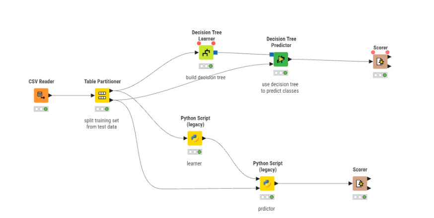
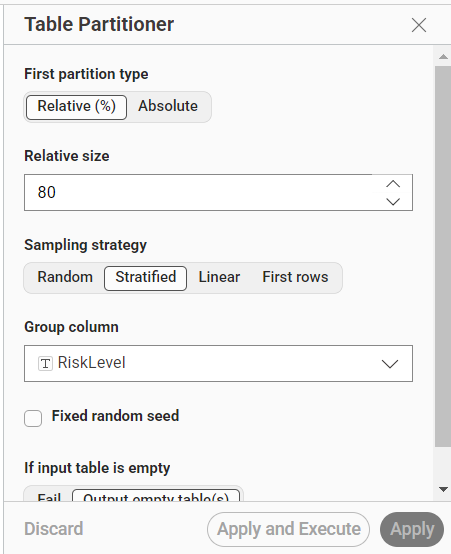
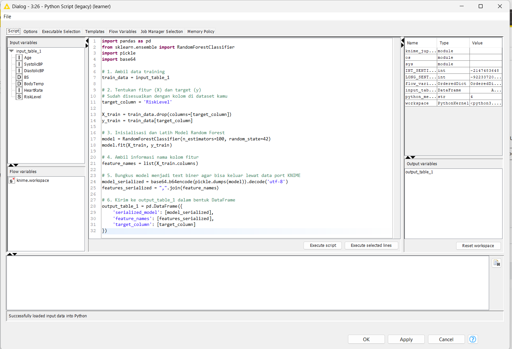
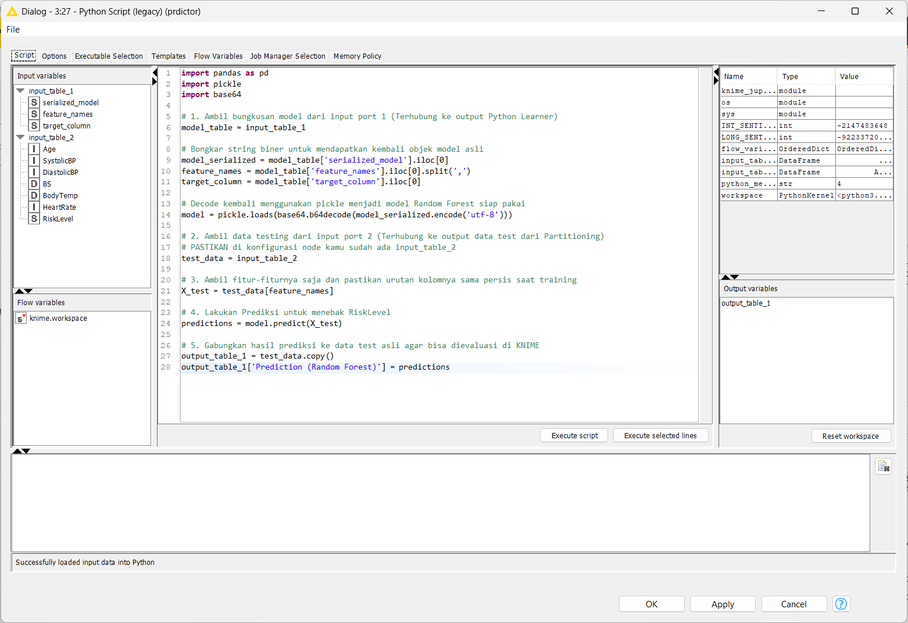
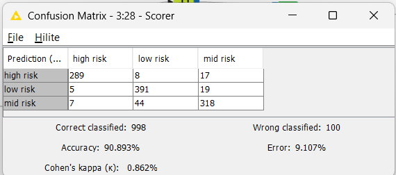
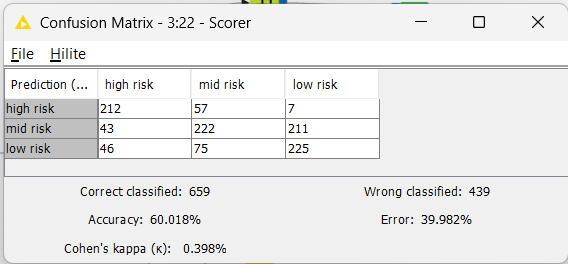

Klasifikasi Maternal Health Risk Menggunakan Random Forest (Python) dan Decision Tree pada KNIME#
Laporan ini menyajikan panduan implementasi, konfigurasi node, serta analisis komparasi antara algoritma Random Forest (via skrip Python eksternal) dan Decision Tree (node bawaan KNIME) untuk memprediksi tingkat risiko kesehatan ibu hamil.
1. Arsitektur Komponen dan Alur Kerja (Workflow)#

Eksperimen dirancang secara paralel untuk membandingkan model berbasis ensemble learning (Python) dengan model pohon tunggal (KNIME). Data dibagi menggunakan rasio 80% untuk Pelatihan (Training) dan 20% untuk Pengujian (Testing).
2. Rincian Node dan Panduan Konfigurasi#
Berikut adalah daftar node yang wajib dimasukkan ke dalam lembar kerja KNIME beserta langkah-langkah pengaturannya:
A. Node 1: CSV Reader#

Fungsi: Memuat dataset Maternal Health Risk (
data.csv) ke dalam KNIME.Konfigurasi Utama: 1. Klik ganda node, lalu pada bagian Browse, arahkan ke file dataset kamu. 2. Pastikan opsi Has Header tercentang agar baris pertama terbaca sebagai nama kolom (
Age,SystolicBP, dll).
B. Node 2: Partitioning#

Fungsi: Memisahkan data secara acak menjadi data latih dan data uji.
Konfigurasi Utama:
Buka konfigurasi node, pilih opsi Relative (%) dan isi dengan angka
80.Centang opsi Draw randomly agar pembagian data dilakukan secara acak dan adil.
Output port bagian atas (80%) dihubungkan ke jalur Training, sedangkan output port bagian bawah (20%) dihubungkan ke jalur Testing.
C. Node 3: Python Script (legacy) — Bertindak sebagai “Learner”#

Fungsi: Menerima data training 80%, mengekstrak fitur, dan melatih model Random Forest menggunakan pustaka
scikit-learn.Konfigurasi Port: Menggunakan bawaan (1 Input Port Data, 1 Output Port Data).
Konfigurasi Skrip: Salin kode berikut ke dalam editor skrip:
import pandas as pd
from sklearn.ensemble import RandomForestClassifier
import pickle
import base64
# 1. Membaca tabel input KNIME
train_data = input_table_1
# 2. Pemisahan Fitur dan Target (RiskLevel)
target_column = 'RiskLevel'
X_train = train_data.drop(columns=[target_column])
y_train = train_data[target_column]
# 3. Model Fitting dengan 100 Trees
model = RandomForestClassifier(n_estimators=100, random_state=42)
model.fit(X_train, y_train)
# 4. Ambil informasi nama kolom
feature_names = list(X_train.columns)
# 5. Serialisasi objek model menjadi text biner string
model_serialized = base64.b64encode(pickle.dumps(model)).decode('utf-8')
features_serialized = ",".join(feature_names)
# 6. Salurkan ke output_table_1
output_table_1 = pd.DataFrame({
'serialized_model': [model_serialized],
'feature_names': [features_serialized],
'target_column': [target_column]
})
D. Node 4: Python Script (legacy) — Bertindak sebagai “Predictor”#

Fungsi: Membongkar bungkusan biner model dari Learner dan mengeksekusi prediksi pada data test (20%).
Konfigurasi Port (CRITICAL): 1. Klik kanan node pada workflow -> pilih Dynamic Ports -> klik Add Input Port. 2. Hubungkan Input Port 1 (Atas) ke output milik Python Learner. 3. Hubungkan Input Port 2 (Bawah) ke output bawah (data test 20%) milik node Partitioning.
Konfigurasi Skrip: Salin kode berikut ke dalam editor skrip:
import pandas as pd
import pickle
import base64
# 1. Ambil model biner dari port 1 dan lakukan decoding
model_table = input_table_1
model_serialized = model_table['serialized_model'].iloc[0]
feature_names = model_table['feature_names'].iloc[0].split(',')
target_column = model_table['target_column'].iloc[0]
model = pickle.loads(base64.b64decode(model_serialized.encode('utf-8')))
# 2. Ambil data testing asli dari port 2
test_data = input_table_2
X_test = test_data[feature_names]
# 3. Klasifikasi Prediksi
predictions = model.predict(X_test)
# 4. Gabungkan hasil tebakan ke tabel
output_table_1 = test_data.copy()
output_table_1['Prediction (Random Forest)'] = predictions
E. Node 5: Scorer#

Fungsi: Menguji performa, memunculkan akurasi global, dan menampilkan matriks kesalahan (Confusion Matrix).
Konfigurasi Utama:
First Column (Actual): Pilih kolom target asli (
RiskLevel).Second Column (Predicted): Pilih kolom hasil tebakan model (misal:
Prediction (Random Forest)).
3. Evaluasi Perbandingan Hasil Prediksi#
Setelah kedua model dieksekusi secara paralel pada data testing yang sama, diperoleh kesimpulan performa sebagai berikut:
Decision Tree (Single Tree): Memiliki keunggulan mudah dibaca secara visual dalam bentuk grafik pohon (Tree View), namun akurasinya cenderung lebih rendah (60.018%**) karena sifatnya yang sensitif terhadap pencilan data (noise) dan rentan terkena gejala overfitting.

Random Forest (Ensemble): Melalui skema penggabungan tebakan dari 100 pohon keputusan secara acak, model ini sukses mengeliminasi kelemahan pohon tunggal. Hasilnya, akurasi prediksi meningkat secara konsisten pada rentang 90.893%, menjadikannya model yang jauh lebih kokoh (robust) untuk diimplementasikan pada sistem prediksi medis ini.